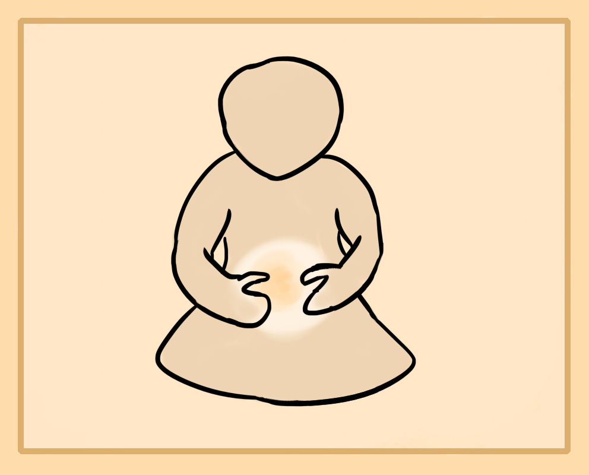

Eventually you'll want to strengthen your ability to project energy. This makes the past section of exercises stronger and gives you more control.
Energy Ball Meditation
Sit in meditation and hold your hands about a basketball size apart. Start building up energy in the belly and stimulate your aura to warm up. Now, lead energy into the hands and outside of them into the space in between the hands. Feel as if you're creating an energy field in between both hands. You will start to feel as if your hands are connected by a field of energy or that there's some pressure inside of this space. When you're comfortable with this, form it into a ball shape. Do this by trying to feel a ball of external feeling inside of your hands. I like to imagine I'm holding a ball in my hands. This seems to help. Continue holding this energy ball to practice your external energy cultivation.
Push Pull Meditation
If you've mastered the healing projection, this one is simple.
Start by building energy in the belly, then draw the energy through your central channel to the heart area and out through the arms until it reaches your hands. This is to create a strong and continuous flow of energy to the hands. Once ready, project energy out of your hands, by pushing forward with energetic force. Push towards an object or wall if it helps you. Keep pushing and see how long you can hold it. This is the energy push meditation.
For the pull meditation you want to do the same warm up as the push meditation. Now externalize your feeling, directing it to a region of space infront of you or an object. From that distance infront of your hands, draw in the atmosphere to the hands. So you're creating a negative pulling field instead of positive pushing field. You can also create a center in the hands and pull the space around it into your hand center.
Water Dance Meditation
This meditation is a fairly difficult external energy technique and will be taught in levels.
Level 1 - Sphere
Stand on your feet, outside or in a quiet room. Warm up your energy and stimulate your energy body by circulating it inside of you. Once ready, form an energy ball in your hands, you can make it small or big. Start to move your hands and arms around while holding the ball. Get comfortable with holding this energy ball while it's moving around. After some practice, take your hands away and try to keep focus of the energy ball in mid air. The stronger your aura and focus is, the easier this will be. Start to move the energy ball around using pure will while making sure not to unfocus on it as it will dissipate away. Move it in a circle around your body, up down, left right.
This trains both your external energy and mind to be able to keep focus on a sphere outside of you and move it around.
Level 2 - Leading Water
This part requires you to pull out your sphere like pulling dough so that it becomes a thick snake of energy that you lead about.
Start by creating an energy sphere outside of you and warming up. Then begin to stretch the sphere when moving it so that the head of it expands out and forward. Try to use both the head and tail as tension or locator points. Spiral this water snake around you making circles. Get comfortable with being able to lead it around.
Level 3 - Directing Space
This exercise requires you to learn how to make a big energy blob around you, Think a big and thicker aura of energy. To begin, start by stimulating your external energy body aura. Start to enlarge the aura so that it's a good 30-50 cm away from you at all points. Then use your feeling to thicken it. This makes it easier to control. So you want to make it heavier and dense like water. Practice this for some time.
Once ready, start pushing the aura blob forward, back, left and right. Get comfortable with controlling a large mass of aura space. Try to move it in any way you can. Move your arms along with it or to direct it. Move your arms up and try to push it up, move them down and push it down to the ground, expanding it out like a water balloon.
Once you're comfortable with this try to instead form or condense the mass of aura from the air around you as shown in the picture above.
This may be difficult to understand and do at first. But continuous practice in external energy cultivation will allow you to achieve it.
The intention is to learn how to form and control energy through movements, simply condensing it outside of you as your hands or body moves. You're consciously externalizing your focus outside of the body and drawing or pulling big chunks of space with you.